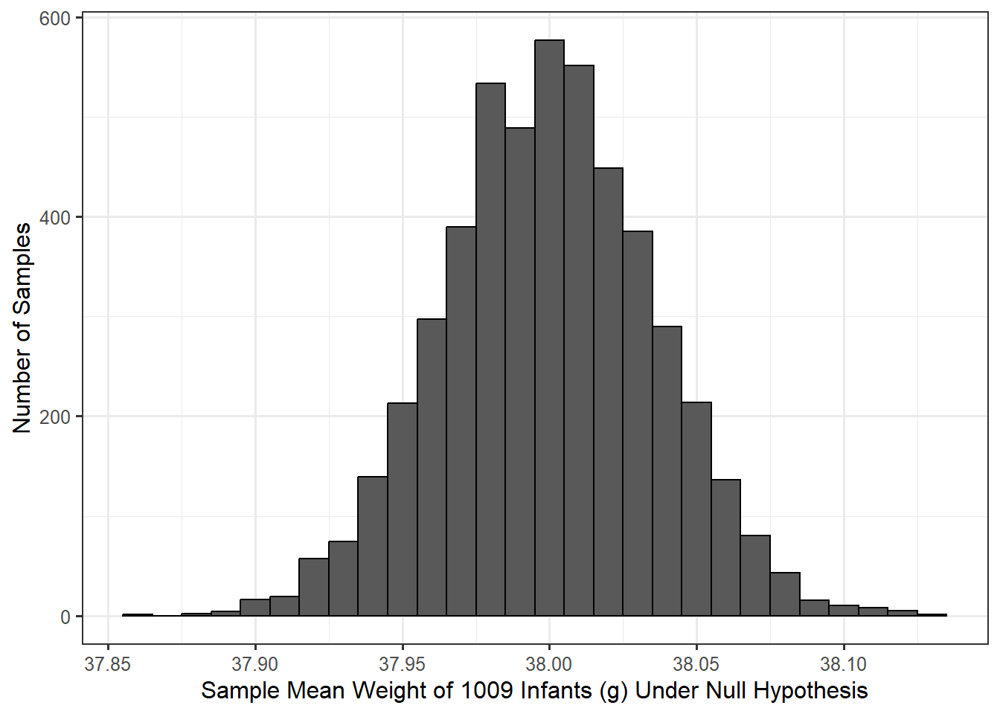
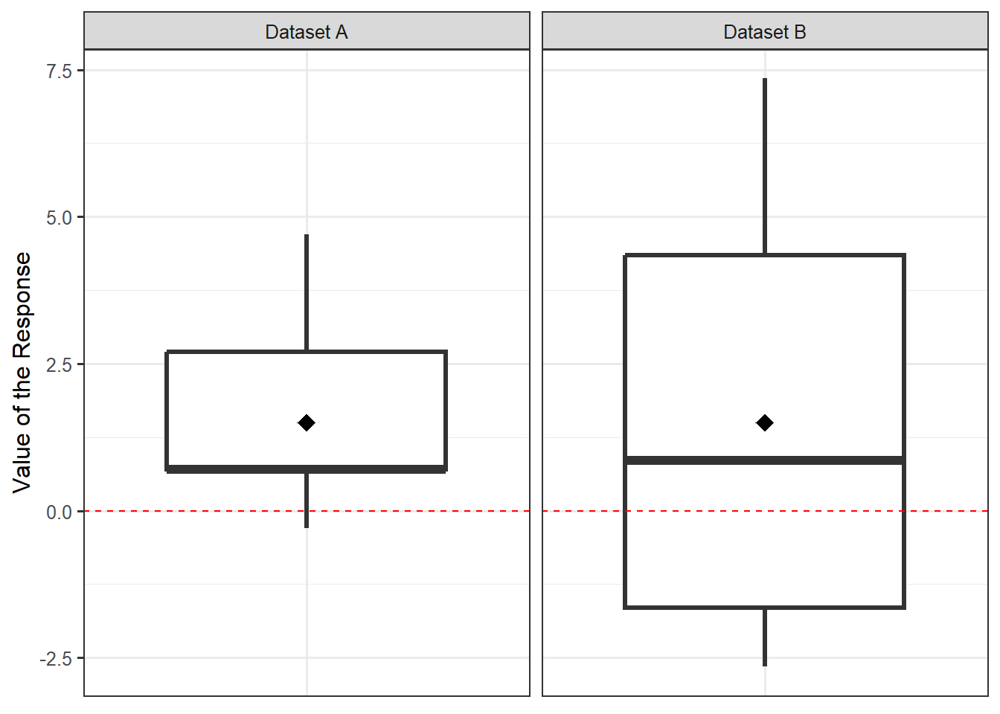
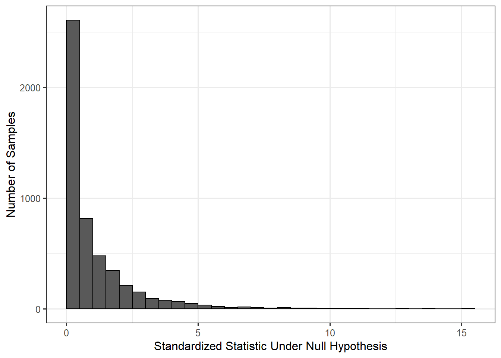

12 Quantifying the Evidence for a Single Mean
Consider the Birth Weight Case Study described in Chapter 9. In the previous chapter, we introduced focused on estimating the mean response of a variable; in this chapter, we consider testing a set of hypotheses involving the mean response.
In 2004, when the data for the Birth Weight Case Study was collected, an infant was considered “full term” if it was born anytime between 37 and 42 weeks. However, in 2013 the American College of Obstetricians and Gynecologists redefined “full term”1 to mean an infant born anytime between 39 and 40 weeks. Consider the following research question:
Does our study provide evidence that the average gestation time for infants born in North Carolina exceeds 38 weeks (so that, on average, babies are born full term by the new definition)?
This question is captured by the following set of hypotheses:
\[H_0: \theta \leq 38 \qquad \text{vs.} \qquad H_1: \theta > 38\]
where \(\theta\) is the average gestation period (in weeks) of an infant born in North Carolina. This parameter characterizes the following model for the data generating process:
\[(\text{Gestation Period})_i = \theta + \varepsilon_i.\]
We will assume that the gestation period for one infant is independent of the gestation period for any other infant and that this data is representative of all infants born in North Carolina; this implies we can assume the errors are independent and identically distributed.
We can estimate the parameter \(\theta\) with the average gestation period for the babies in our sample: 39.11 weeks. We seek to quantify the evidence against the null hypothesis summarized by this data.
In Chapter 7, we discussed the concept of the null distribution of the statistic. Here, we are interested in modeling the null distribution of the sample mean gestation for a sample of 1009 infants. Notice, just like when modeling the sampling distribution, incorporating the sample size is an important aspect of our model. Assuming the data is consistent with the above two conditions on the distribution of the errors in the model for the data generating process, we can construct a model of the null distribution using a bootstrap procedure. Figure 12.1 illustrates this model based on 5000 bootstrap replications.
Figure 12.1 was constructed using the following procedure:
- Alter the sample to be representative of having come from a population in which the null hypothesis is true; in this case, the data was recentered to have a sample mean of 38.
- Randomly sample, with replacement, 1009 records from the altered original sample.
- For this bootstrap resample, compute the mean gestation period and retain this value.
- Repeat steps 2 and 3 many (say 5000) times.
The resulting simulated data is illustrated in Table 12.1. Each row represents the gestation periods for a single resample taken with replacement from the altered original data. The final column is the computed (and retained), sample mean from each resample. This is the bootstrap statistic under the null hypothesis.
| Value 1 | Value 2 | Value 3 | Value 1007 | Value 1008 | Value 1009 | Boostrap Mean | |
|---|---|---|---|---|---|---|---|
| 36.88503 | 36.88503 | 39.88503 | … | 36.88503 | 36.88503 | 37.88503 | 37.96234 |
| 36.88503 | 37.88503 | 37.88503 | … | 39.88503 | 36.88503 | 35.88503 | 37.91278 |
| 37.88503 | 37.88503 | 37.88503 | … | 38.88503 | 37.88503 | 39.88503 | 37.94747 |
| 36.88503 | 37.88503 | 35.88503 | … | 36.88503 | 38.88503 | 37.88503 | 38.02577 |
| 36.88503 | 36.88503 | 37.88503 | … | 38.88503 | 37.88503 | 40.88503 | 38.00198 |
| 39.88503 | 38.88503 | 36.88503 | … | 36.88503 | 37.88503 | 37.88503 | 38.03072 |
| 38.88503 | 38.88503 | 36.88503 | … | 37.88503 | 36.88503 | 38.88503 | 38.06938 |
| 36.88503 | 35.88503 | 39.88503 | … | 36.88503 | 38.88503 | 37.88503 | 38.00396 |
| 37.88503 | 36.88503 | 37.88503 | … | 37.88503 | 35.88503 | 35.88503 | 37.96234 |
| 39.88503 | 37.88503 | 35.88503 | … | 36.88503 | 35.88503 | 36.88503 | 37.99802 |
Notice that the null distribution is centered on 38; this is not an accident. Recall that sampling distributions are centered on the true value of the parameter; since a null distribution is just the sampling distribution of a statistic when the parameter is equal to the null value (in this case 38), the null distribution should be centered on the null value. That is, the null distribution is designed to be centered on the null value in the hypotheses. In order to determine if our sample is consistent with our expectations, we overlay our observed sample mean (\(\widehat{\theta} = 39.11\)) on our model for the null distribution. Since this value is in the far right tail of the null distribution (off the edge of the graph in this case), our sample is inconsistent with the null distribution. This tells us that if the average gestation period of an infant was only 38 weeks, we would not have expected to observe a sample mean of \(\widehat{\theta} = 39.11\) or higher in a sample of 1009 infants. Since our data is not consistent with our expectations, our study provides evidence that the population from which our sample was drawn has an average gestation period larger than 38 weeks.
12.1 Standardized Statistics
In the above discussion, we compared the observed sample mean to our distribution of expected sample means if the null hypothesis were true. We were essentially comparing \(\widehat{\theta}\) to 38 while accounting for the sampling variability of our estimate \(\widehat{\theta}\), the sample mean. This is a completely valid approach to inference. In this section, we consider an equivalent (conceptually), though alternative, approach which will provide a more general framework for inference.
At its heart, hypothesis testing is about comparing two models for the data generating process. So far, we have stated one of those models:
\[\text{Model 1}: \quad (\text{Gestation Period})_i = \theta + \varepsilon_i.\]
This is the data generating process under the alternative hypothesis in which no restrictions are placed on the value of \(\theta\). However, if the null hypothesis is true, then the model for the data generating process simplifies to
\[\text{Model 0}: \quad (\text{Gestation Period})_i = 38 + \epsilon_i.\]
This may not seem like a simpler model, but it is because there are less unknown parameters; specifically, Model 0 has no parameters. A null hypothesis essentially places further restrictions on the data generating process. A hypothesis test is then about comparing these two models.
Big Idea
Hypothesis testing is about comparing two potential models for the data generating process. Specifically, we are asking whether a reduced model is sufficient for explaining the data or if there is evidence a more complex model is necessary.
Note
You may be wondering why we chose the value 38 when writing Model 0 above. After all, the null hypothesis was \(H_0: \theta \leq 38\); so, it is natural to wonder why we did not choose 37 or one of the other infinite values below 38. In hypothesis testing, we choose to be as conservative as possible. If we are to declare that the data is not consistent with the null hypothesis, we want to be sure we are able to say the data is not consistent with any part of the null hypothesis.
Recall that our observed statistic was \(\widehat{\theta} = 39.11\); so, if we are able to state that we would not expect a sample mean gestation period of 39.11 or larger if the mean gestation period in the population is 38, then surely we are able to state that we would not expect a sample mean gestation period of 39.11 or larger if the mean gestation period in the population is 37. That is, if 39.11 is statistically discernible from 38, surely it is statistically discernible from 37 (or any other value less than 38).
That is, when setting up our model for the data generating process under the null hypothesis — when modeling the null distribution of our statistic — we choose the null value because it is the hardest to establish evidence against in a one-sided hypothesis test. If we can statistically discern our statistic differs from the null value, we can statistically discern our statistic differs from any value specified in the null hypothesis. That allows us to confidently provide evidence against the entire null hypothesis.
Essentially, the null hypothesis we have been considering (\(H_0: \theta \leq 38\)) is stating that Model 0 is sufficient for explaining the data observed. And, the alternative hypothesis (\(H_1: \theta > 38\)) is stating that Model 0 is not sufficient, and a more complex model (Model 1) is necessary for explaining the data observed. This is why we refer to hypothesis testing as assessing model consistency. We are determining if there is evidence that the data is inconsistent with a proposed model for the data generating process.
Intuitively, the two proposed models would be equivalent (Model 0 would be sufficient for explaining the data) if they both performed similarly in predicting a response. Model 1 would be preferred (Model 0 would not be sufficient for explaining the data) if it performs better in predicting the response. While this idea is intuitive, the process for comparing the models is not — we can assess “prediction” by the amount of variability in the data. If Model 0 captures a similar amount of variability in the response as Model 1, then it is reasonable that Model 0 is sufficient.
For Model 0, the amount of variability can be quantified by
\[SS_0 = \sum_{i=1}^{n} \left[(\text{Gestation Period})_i - 38\right]^2.\]
That is, we are computing the total amount (summation) that the observed responses deviate (the squared difference) from the proposed mean of 38. For Model 1, the amount of variability can be quantified by
\[SS_1 = \sum_{i=1}^{n} \left[(\text{Gestation Period})_i - \widehat{\theta}\right]^2\]
where \(\widehat{\theta} = 39.11\), the observed sample mean. Here, we are computing the total amount (summation) that the observed responses deviate (the squared difference) from the “best” estimate for the unknown mean response. Since Model 1 does not place any constraints on the value of the parameter, we use our estimate from the sample.
Notice that these sums of squared (SS) terms are similar to the definition of sample variance discussed in Chapter 5, without the scaling factor. The rationale for using these to assess predictive ability of the model will be further discussed in Chapter 19. Here, we simply note that they are measuring a distance the observed data is from a mean; the difference is whether that mean is unrestricted (and therefore estimated from the data, Model 1) or restricted under the null hypothesis (Model 0). If \(SS_0\) and \(SS_1\) were similar, then it would suggest that \(\widehat{\theta}\) is close to the null value of 38, and \(\widehat{\theta}\) differs from the null value only due to sampling variability, which would be in line with the null hypothesis. If, on the other hand, \(SS_0\) and \(SS_1\) differ substantially from one another, it suggests \(\widehat{\theta}\) differs from the null value more than we would expect due to variability alone. That is, if \(SS_0\) and \(SS_1\) differ substantially from one another, it suggests that our data is not something we would expect to observe under the null hypothesis. Therefore, the difference in these two sums of squares gives us a measure of the signal in the data against the null hypothesis. The larger this difference, the stronger the signal.
However, the same signal can be more difficult to detect (or discern) in the presence of a lot of background noise. Think about having a radio on in the background of a party, and suppose the radio is set to a specific volume. If there are not many people talking at the party, it is easy to hear the radio; the signal is strong relative to the background noise. However, if there are a lot of people talking at the party, the radio is difficult to hear even though its volume hasn’t changed; the signal is weak relative to the background noise. A signal is more difficult to locate if the background noise is elevated. The same principle holds in data analysis.
Consider Figure 12.2. Suppose we want to use each of these datasets (both containing a sample of size \(n = 20\)) to test the hypotheses:
\[H_0: \mu = 0 \qquad \text{vs.} \qquad H_1: \mu \neq 0\]
where \(\mu\) is the population mean. Both datasets have exactly the same observed sample mean response (the black diamond in the figure). Therefore, it can be shown that the difference between \(SS_0\) and \(SS_1\) is exactly the same for both datasets. However, just visually, it should be clear that Dataset A provides stronger evidence against the null hypothesis than Dataset B; that is, Dataset A is more inconsistent with a mean of 0. The difference is the variability — the background noise.

Therefore, when quantifying the strength of a signal in a statistical analysis, it is common to measure the signal relative to the background noise. Returning to our example for the Birth Weight Case Study, we have that \(SS_0 - SS_1\) quantifies our signal. The noise is the variability in the sample given by
\[s^2 = \frac{1}{n-1}\sum_{i=1}^{n} \left[(\text{Gestation Period})_i - \widehat{\theta}\right]^2,\]
the sample variance. We can examine our signal relative to the noise using a signal-to-noise ratio,
\[T^* = \frac{SS_0 - SS_1}{s^2} = 963.2\]
for our example. Such signal to noise ratios are known as standardized statistics.
Definition 12.1 (Standardized (Test) Statistic) Also, known as a test statistic, a standardized statistic is a ratio of the signal in the sample to the noise in the sample. The larger the standardized statistic, the stronger the evidence of a signal; said another way, the larger the standardized statistic, the stronger the evidence against the null hypothesis.
Note
A standardized statistic is often referred to as a “test statistic,” or a “standardized test statistic,” because they are heavily used in hypothesis testing.
Of course, the natural question is “when does a standardized statistic become large enough?” Just as we constructed the null distribution for the observed sample mean in order to construct a distribution of our expectations under the null hypothesis, we can construct a null distribution of the standardized statistic to determine our expectations of this ratio under the null hypothesis. Figure 12.3 provides a model for the null distribution of our standardized statistic for the Birth Weight Case Study. This model for the null distribution is constructed in the same way we constructed the model for the null distribution of the sample mean except that instead of retaining the sample mean from each resample, we compute and retain the standardized statistic from each resample.

Notice that using Figure 12.3 we reach the same conclusions as when we used Figure 12.1. In Figure 12.3, we see that our observed standardized statistic of 963.2 is in the far right tail of the null distribution. Therefore, our data is inconsistent with the null hypothesis. That is, if the null hypothesis were true, it would be very unlikely to obtain a sample which produced a standardized statistic this extreme or more so due to sampling variability alone.
If our conclusions do not change, why the two different approaches? It turns out there is some theory that says bootstrapping standardized statistics tends to be a bit more stable computationally, and these standardized statistics are a bit easier to model analytically using probability theory (as we will later see). However, we introduce them because it again provides a nice overarching framework that unifies several of the approaches discussed in the text.
Big Idea
Quantifying evidence to compare two models for the data generating process can be done by comparing the signal in the data to the background noise.
Before moving on, we should note that there is not a unique standardized statistic. Other standardized statistics are often reported; for example, for hypothesis testing of a single mean response, the ratio
\[\frac{\sqrt{n}\left(\widehat{\theta} - 38\right)}{s}\]
is often reported.
It can be shown that many standardized statistics are related to one another (for example, the one given here is the square root of the standardized statistic reported previously). When the same conditions are applied to the data generating process, various standardized statistics yield the same conclusions. Again, we opt for the one described earlier because it will provide continuity in the text.
12.2 Computing the P-value
Now that we have a model for the null distribution of the standardized statistic, we can compute a p-value. The p-value is the probability of observing a sample as or more extreme due only to sampling variability. Our standardized statistic has the form
\[T^* = \frac{SS_0 - SS_1}{s^2}\]
If the sample were more extreme — that is, if it produced a larger signal — then we would expect the difference between \(SS_0\) and \(SS_1\) to be even larger. Therefore, larger values of the standardized statistic present stronger evidence against the null hypothesis. When looking at the null distribution of the standardized statistic, computing the p-value corresponds to computing the area to the right of the observed standardized statistic.
Looking back at Figure 12.3, our observed standardized statistic is not even on the graphic, meaning the p-value (the tail area) is essentially 0. The data therefore provides strong evidence that the average gestation period of infants born in North Carolina exceeds 38 weeks.
As stated in Chapter 7, we should never report a p-value in isolation. We estimated the average gestation period of infants born in North Carolina to be 39.11 weeks. Our p-value tells us that we are able to statistically discern a difference between 39.11 and the 38 weeks from the null hypothesis. This ability to statistically discern this difference is in part due to the sample size of 1009 infants. To know whether this difference is meaningful, we would want to discuss the results with an obstetrician. However, informally, the increase of one week in the gestation period of an infant has a significant impact on both the health of the infant and the life of the mother (ask anyone who is 9 months pregnant!).
Finally, we take this opportunity to remind you that our conclusion is only about the average gestation period of infants. We make no claim about how long any individual infant will be carried prior to labor.